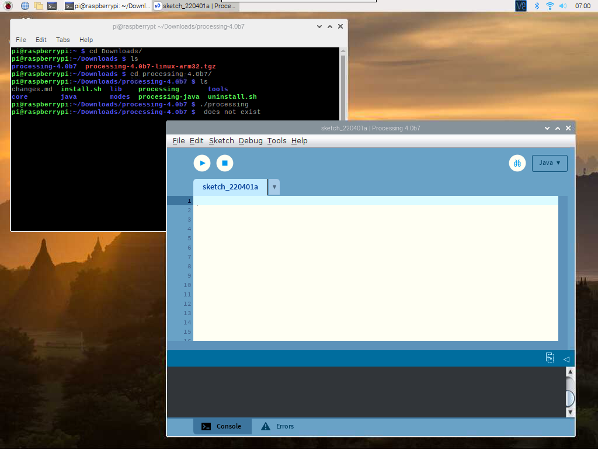

Nota
Ciao, benvenuto nella Community di Facebook dedicata agli appassionati di SunFounder Raspberry Pi, Arduino e ESP32! Approfondisci le tue conoscenze su Raspberry Pi, Arduino ed ESP32 insieme ad altri appassionati.
Perché unirsi a noi?
Supporto Esperto: Risolvi problematiche post-vendita e sfide tecniche con l’aiuto della nostra comunità e del nostro team.
Impara e Condividi: Scambia consigli e tutorial per migliorare le tue competenze.
Anteprime Esclusive: Ottieni accesso anticipato agli annunci di nuovi prodotti e alle anteprime.
Sconti Speciali: Approfitta di sconti esclusivi sui nostri prodotti più recenti.
Promozioni Festive e Giveaway: Partecipa a concorsi e promozioni speciali.
üëâ Sei pronto a esplorare e creare con noi? Clicca su [Qui] e unisciti subito!
Gioca con Processing
Cos’è Processing?
Processing è un ambiente di programmazione semplice, creato per facilitare lo sviluppo di applicazioni visivamente orientate, con enfasi sull’animazione e sul fornire feedback istantanei agli utenti tramite l’interazione. I suoi sviluppatori desideravano un modo per «abbozzare» idee in codice. Poiché le sue capacità si sono ampliate negli ultimi dieci anni, Processing è ora utilizzato per lavori avanzati a livello di produzione, oltre che per i suoi ruoli di sketching. Inizialmente costruito come estensione specifica di Java per artisti e designer, Processing è diventato uno strumento completo di progettazione e prototipazione utilizzato per installazioni su larga scala, motion graphics e visualizzazioni di dati complesse.
Processing è basato su Java, ma poiché gli elementi di programmazione sono piuttosto semplici, puoi imparare a usarlo anche se non conosci Java. Se sei già familiare con Java, ti consigliamo di dimenticare temporaneamente che Processing sia basato su Java fino a quando non avrai familiarizzato con il suo API.
Questo testo è tratto dal tutorial Processing Overview.
Installazione di Processing
Nota
Prima di poter usare Processing, devi accedere in remoto al desktop del Raspberry Pi (Desktop Remoto) o collegare un display al Raspberry Pi.
Benvenuto in Processing! Visita il sito https://processing.org/download e seleziona la versione Linux ARM32-bit
Scaricherai un file .tar.gz che dovrebbe essere familiare agli utenti Linux.
Scarica il file nella tua directory principale, quindi apri una finestra di terminale e digita:
tar xvfz processing-xxxx.tgz
(Sostituisci xxxx con il resto del nome del file, che rappresenta il numero della versione.) Questo creerà una cartella denominata processing-2.0 o simile. Cambia quindi directory:
cd processing-xxxx
e avvialo:
./processing
Se tutto è andato bene, dovrebbe apparire la finestra principale di Processing.
Installazione della libreria Hardware I/O
Per utilizzare il GPIO del Raspberry Pi, è necessario aggiungere manualmente la Hardware I/O library.
Clicca su Sketch -> Import Library -> Add Library......

Trova Hardware I/O, selezionala e quindi clicca su Installa. Al termine, apparirà un’icona di spunta.